本文仅为学习记录，并非教程
这次记录文主要侧重于应用，参考了Sob老师的博文和网络上的各大教程
以FCC Cu为例进行ELF计算与分析
采用FCC面心立方最密堆积的铜单胞，使用vasp计算，先进行结构优化，确认收敛后进行ELF计算
1
2
3
4
5
6
7
8
9
10
11
12
13
14
15
16
17
18
19
20
21
22
23
24
25
26
27
28
29
30
31
32
33
34
35
36
37
38
39
| Global Parameters
ISTART = 1 (Read existing wavefunction, if there)
ISPIN = 2 (Non-Spin polarised DFT)
MAGMOM = 4*0.6
# ICHARG = 11 (Non-self-consistent: GGA/LDA band structures)
LREAL = .FALSE. (Projection operators: automatic)
ENCUT = 530 (Cut-off energy for plane wave basis set, in eV)
# PREC = Accurate (Precision level: Normal or Accurate, set Accurate when perform structure lattice relaxation calculation)
LWAVE = .TRUE. (Write WAVECAR or not)
LCHARG = .TRUE. (Write CHGCAR or not)
ADDGRID= .TRUE. (Increase grid, helps GGA convergence)
LASPH = .TRUE. (Give more accurate total energies and band structure calculations)
PREC = Accurate (Accurate strictly avoids any aliasing or wrap around errors)
# LVTOT = .TRUE. (Write total electrostatic potential into LOCPOT or not)
# LVHAR = .TRUE. (Write ionic + Hartree electrostatic potential into LOCPOT or not)
# NELECT = (No. of electrons: charged cells, be careful)
# LPLANE = .TRUE. (Real space distribution, supercells)
# NWRITE = 2 (Medium-level output)
# KPAR = 2 (Divides k-grid into separate groups)
# NGXF = 300 (FFT grid mesh density for nice charge/potential plots)
# NGYF = 300 (FFT grid mesh density for nice charge/potential plots)
# NGZF = 300 (FFT grid mesh density for nice charge/potential plots)
Electronic Relaxation
ISMEAR = 1 (Gaussian smearing, metals:1)
SIGMA = 0.2 (Smearing value in eV, metals:0.2)
NELM = 90 (Max electronic SCF steps)
NELMIN = 6 (Min electronic SCF steps)
EDIFF = 1E-08 (SCF energy convergence, in eV)
# GGA = PS (PBEsol exchange-correlation)
Ionic Relaxation
NSW = 0 (Max ionic steps)
IBRION = -1 (Algorithm: 0-MD, 1-Quasi-New, 2-CG)
ISIF = 2 (Stress/relaxation: 2-Ions, 3-Shape/Ions/V, 4-Shape/Ions)
EDIFFG = -2E-02 (Ionic convergence, eV/AA)
# ISYM = 2 (Symmetry: 0=none, 2=GGA, 3=hybrids)
LELF = .TRUE.
NPAR = 1
|
在优化完的结构上进行自洽计算，添加LELF = .TRUE.这个参数，确保ELFCAR文件输出
官方wiki还提到必须显示开启NPAR = 1，然而网上的各大教程都没有提到这一点
If LELF is set, NPAR=1 has to be set explicitely in the INCAR file in addition
且有一篇讨论帖：https://wiki.vasp.at/forum/viewtopic.php?t=20020
不过我自己尝试的时候发现超算平台上添加NPAR = 1会报错，而在自己电脑上则不会报错，有点迷、、、
用Vesta载入ELFCAR文件
先设置一下等值面数值
Isosurface Level（等值面水平）是一个关键参数，用于控制可视化电子局域化程度的阈值，VESTA会绘制出ELF等于该值的等值面（isosurface），直观展示电子局域化程度高于该阈值的区
Properties-Isosurfaces-Isosurfaces level，设置完后可以按以下Tab键就会自动保存应用
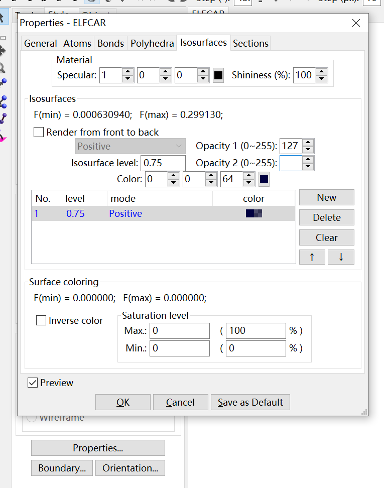
这里如果设置0.75的话啥也看不到，因为铜单胞中存在着金属键，并没有很强的局域化电子，而是均匀分布的电子气
**高定域性通常出现在共价作用区域、孤对电子区域、原子内核及壳层结构区域 **
然后就可以查看ELF图了
首先是3D的图
左上角-Edit-Lattice planes，新建一个图，根据想查看的面的来设置米勒指数hlk，以及设置距离d
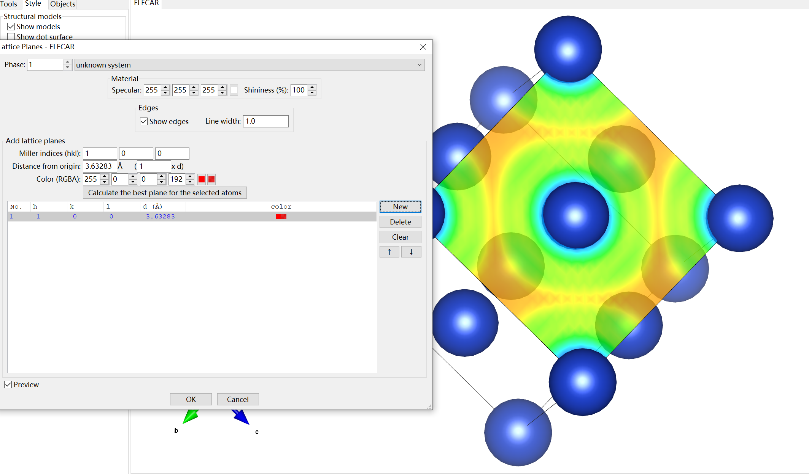
然后是2D的图
左上角-Utilities-2D Data Display-Slice即可
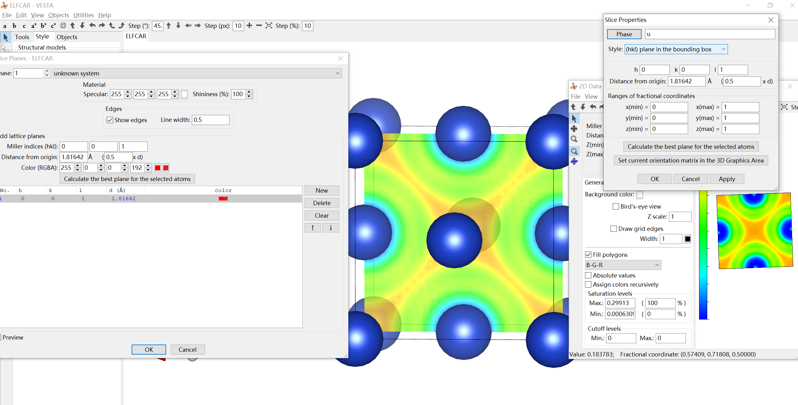
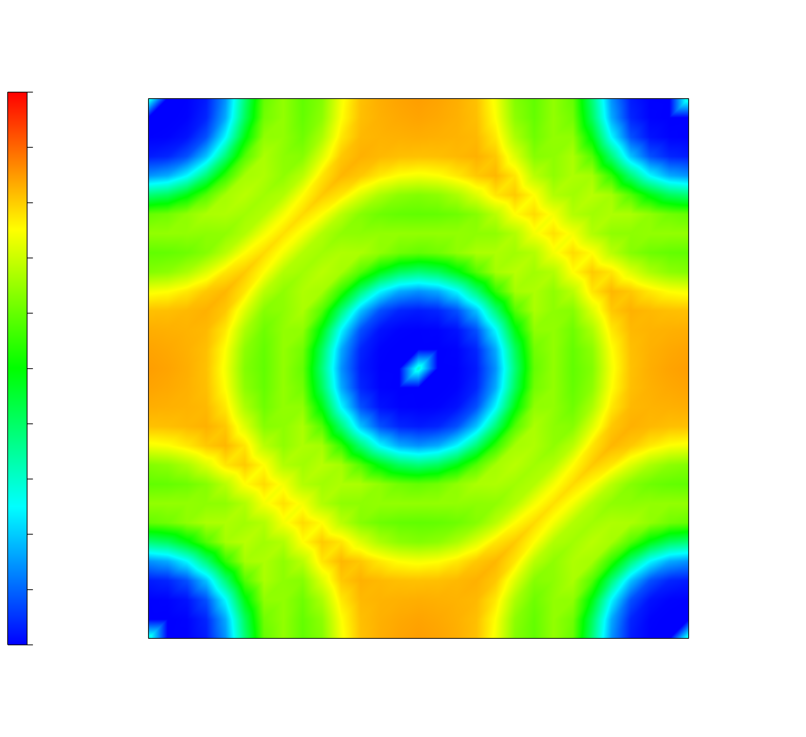
可以看到，顶点Cu与顶点Cu原子之间、顶点Cu和面心Cu之间的电子的局域化程度比较高并且没有明显的偏向偏离
接下来看一下一维时的电子定域化情况
左上角-Utilities-Line profile即可
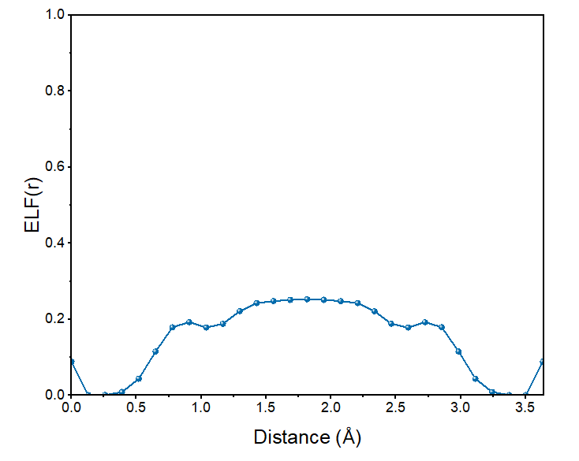
Cu和Cu两原子中间存在均匀的非零的电子局域函数，虽然不足0.5但分布平坦，这是金属键合的特征
两个铜原子的ELF®值相近
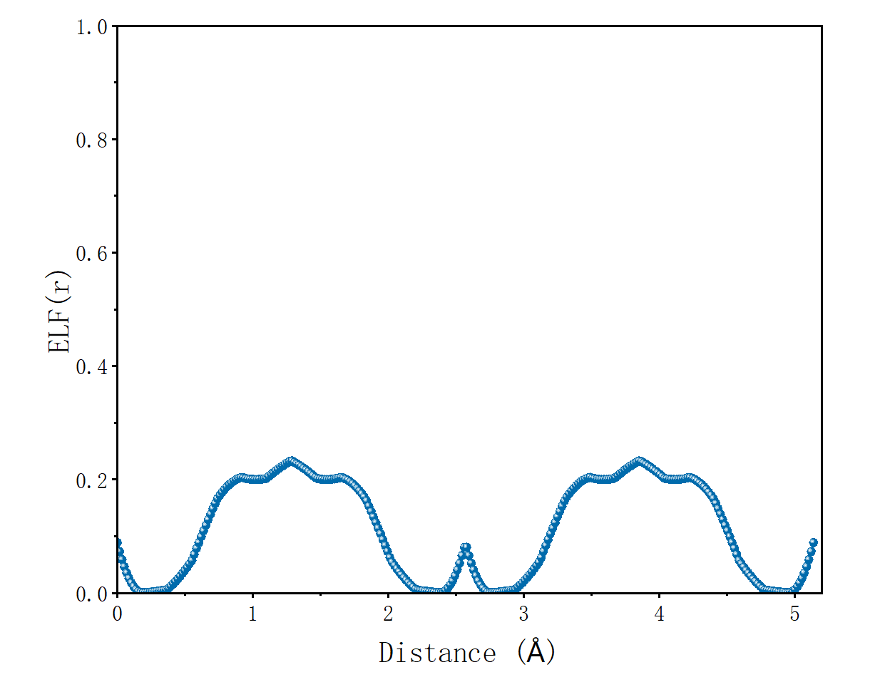
三个铜原子的ELF®值相近
离子晶体CsF
再看一下离子键的情况，以CsF为例
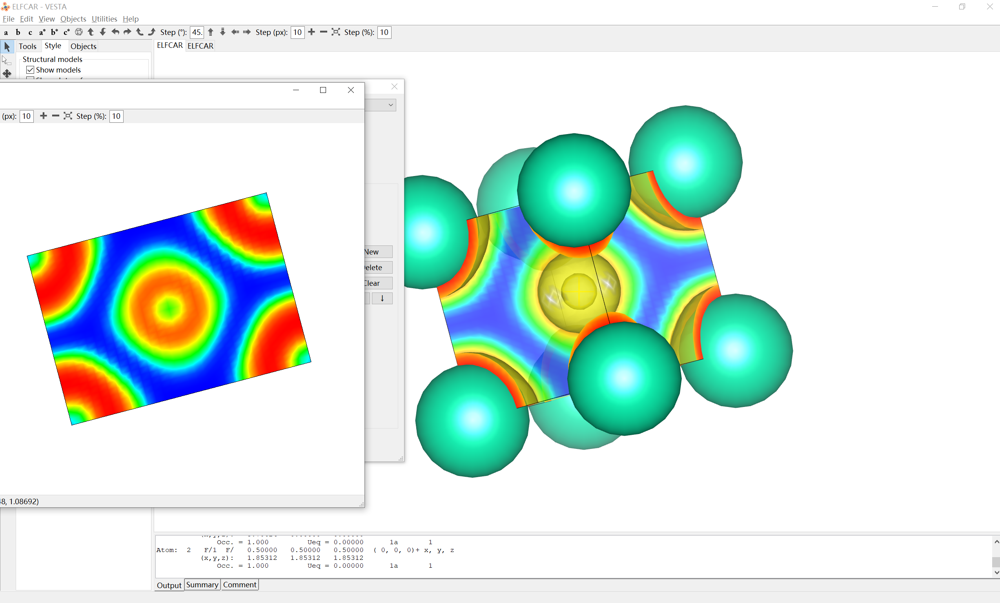
氟和铯之间出现深蓝色，这说明在这个区域电子的分布较为离域化，即氟和铯之间不存在共用电子，键的类型偏向离子键
再看看对角线上的电荷分布
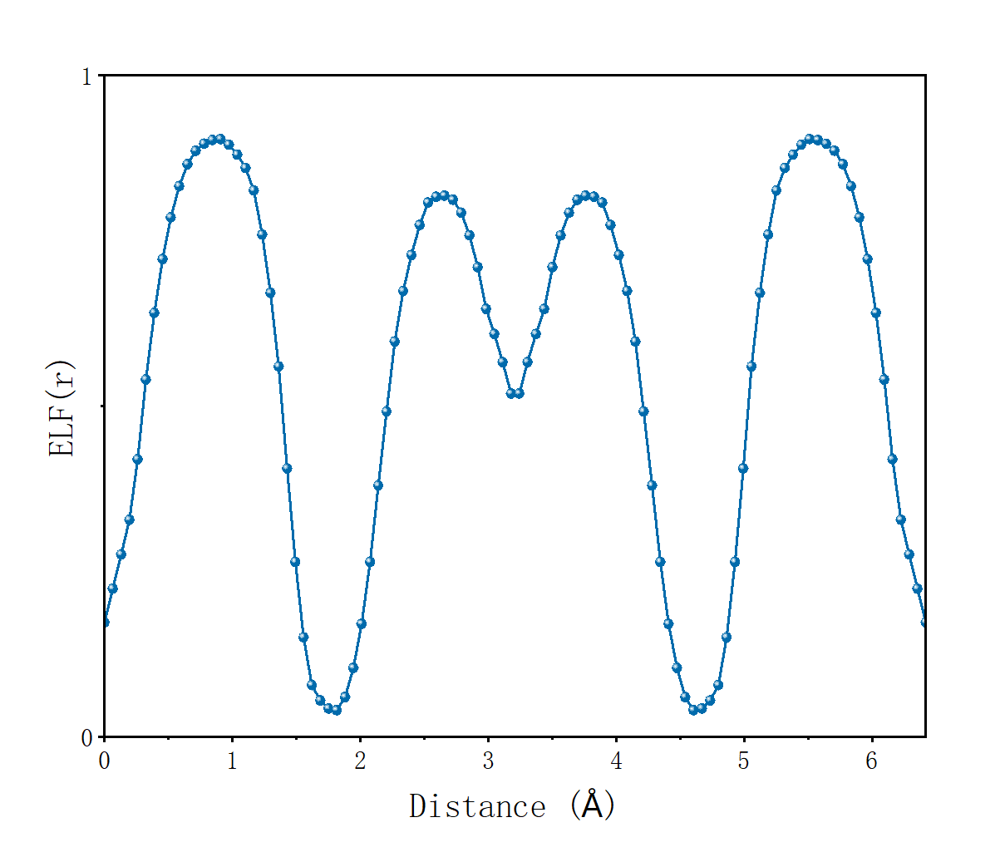
两端为铯中间为氟，可以看到氟和铯ELF®值差别较大
共价晶体——硅
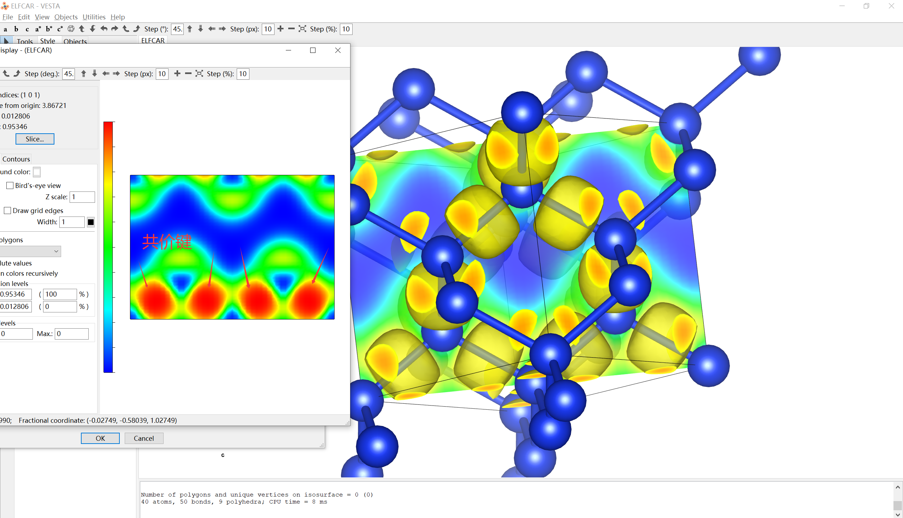
如箭头所指，硅原子和硅原子之间有较强的电子定域化作用，键的类型为共价键
如下图，体对角线上的ELF图也能很好证明，Si-Si之间的区域电子化定域程度极高，呈现明显的尖峰
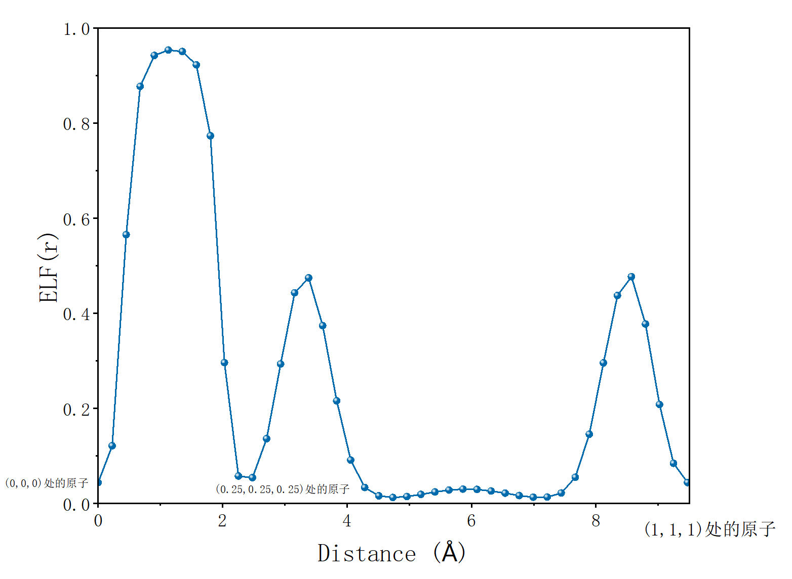
共价晶体——灰锡
我仍记得高中时课本讲的一个稍微有些特殊的例子——灰锡，灰锡是一个共价晶体
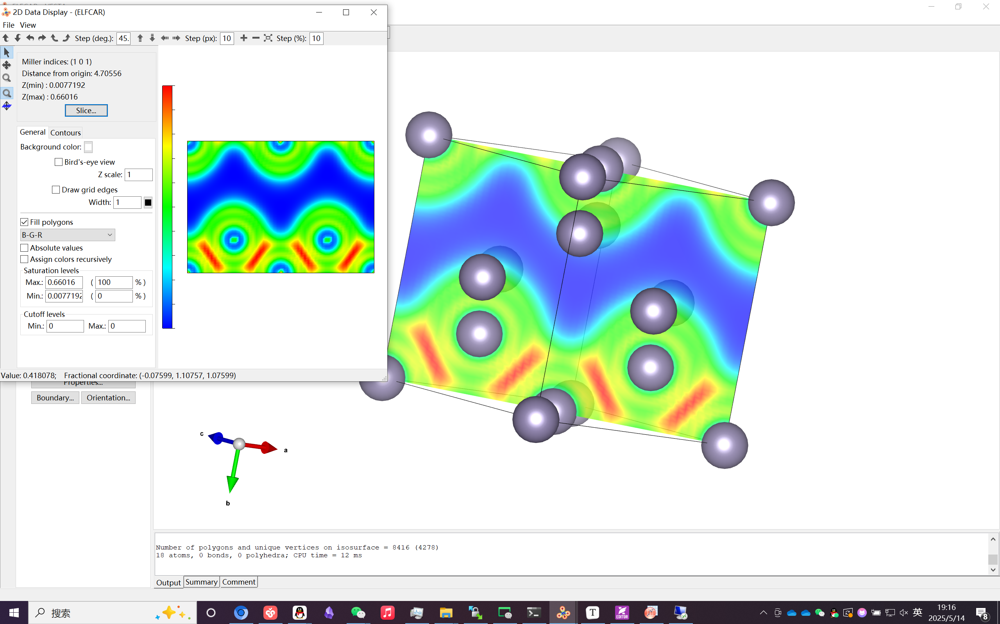
可以看到，灰锡与晶体硅结构上类似，Sn(
)与Sn(0,0,0)与以及Sn(0.5,0.5,0)成键，Sn(
)与Sn(0.5,0.5,0)和Sn(1,1,0)成键。成键电子局域化程度较高，为共价电子